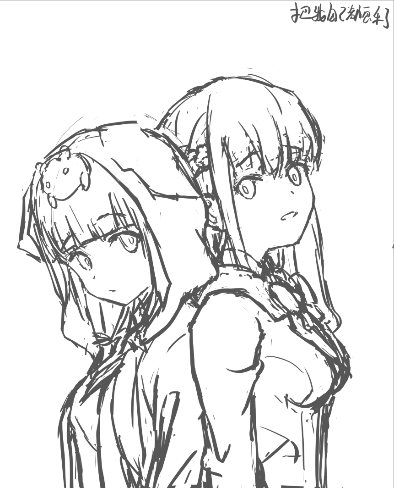
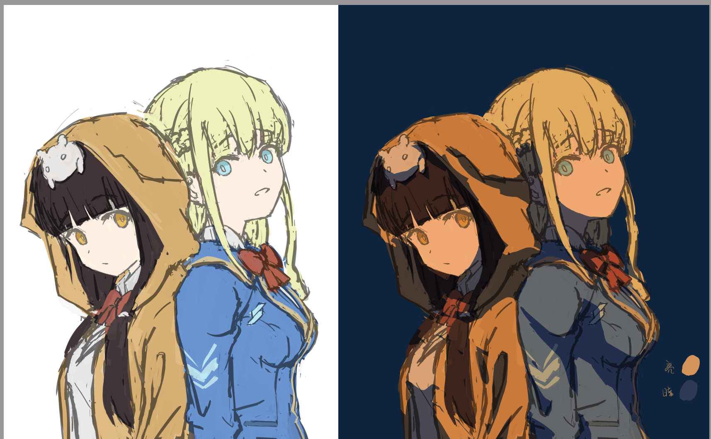
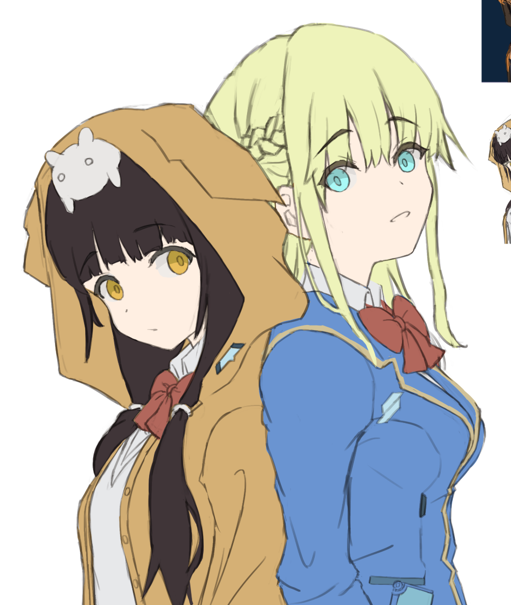
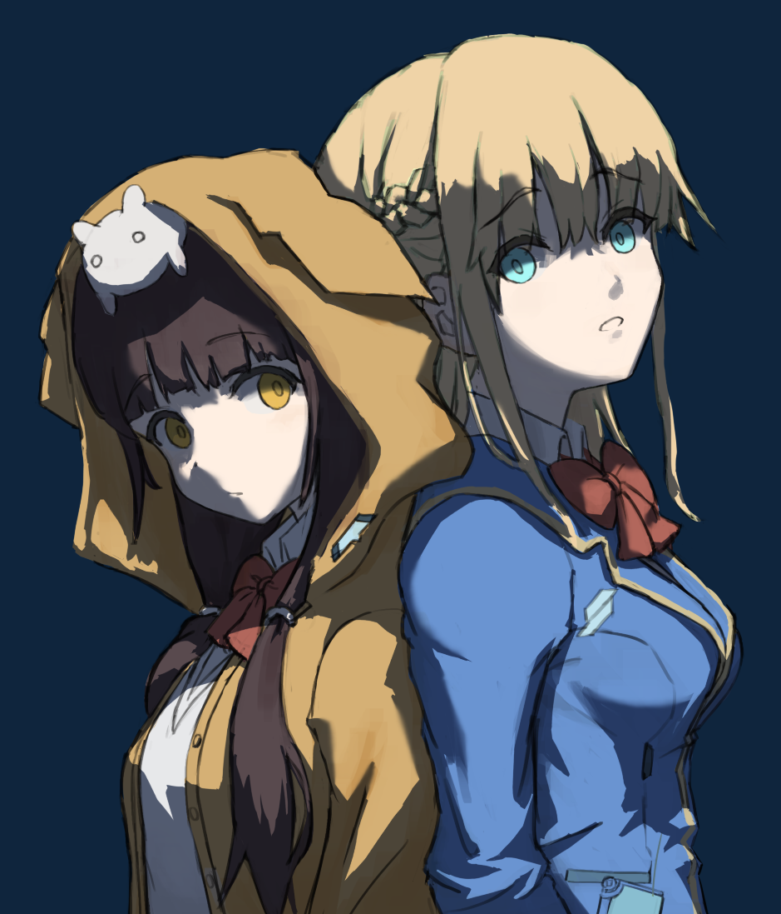
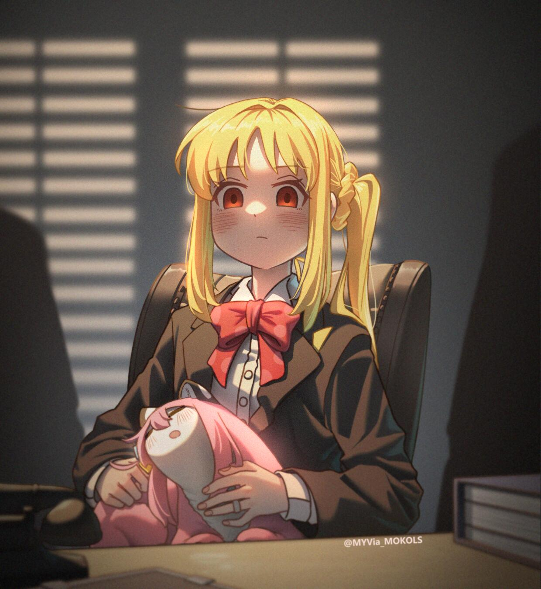
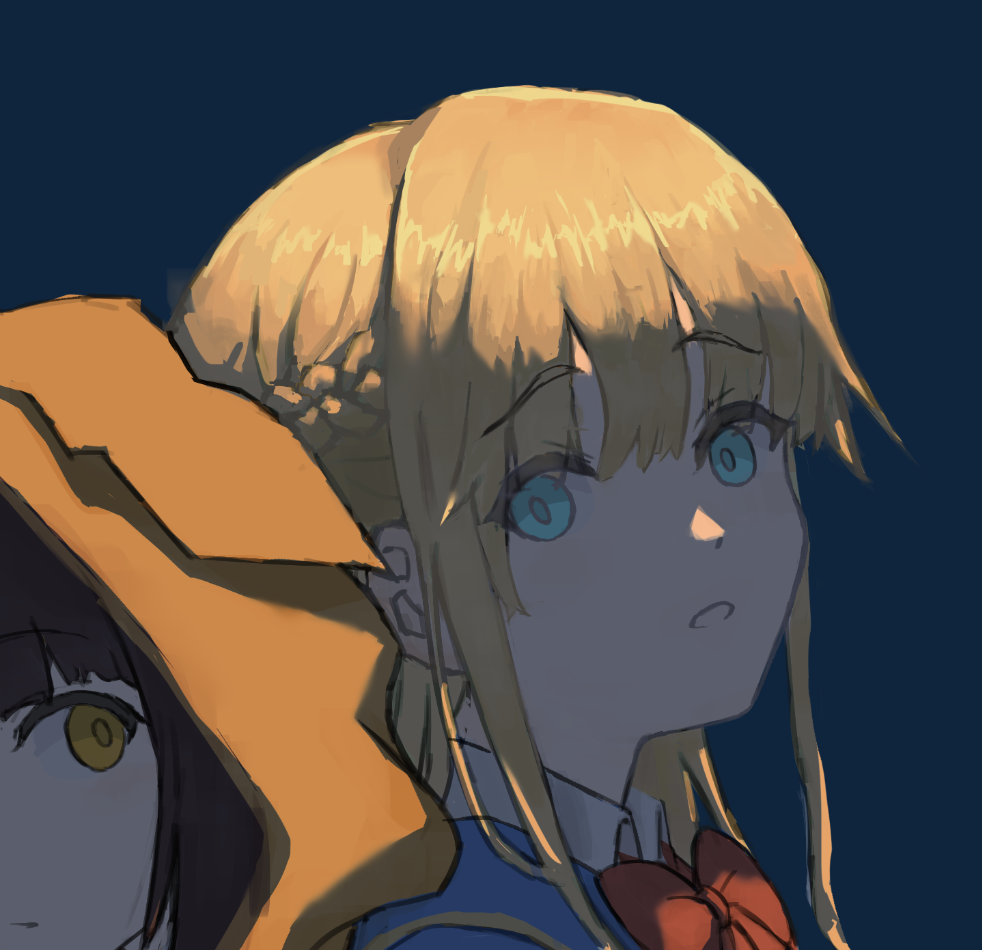
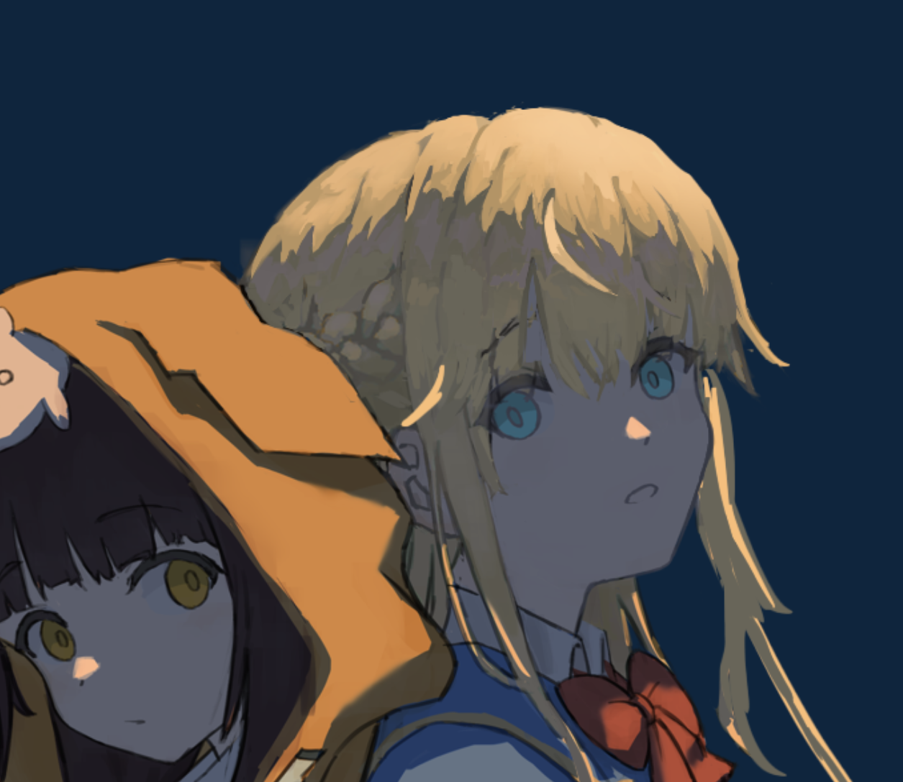
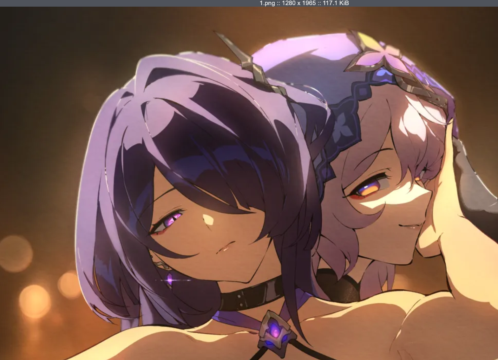
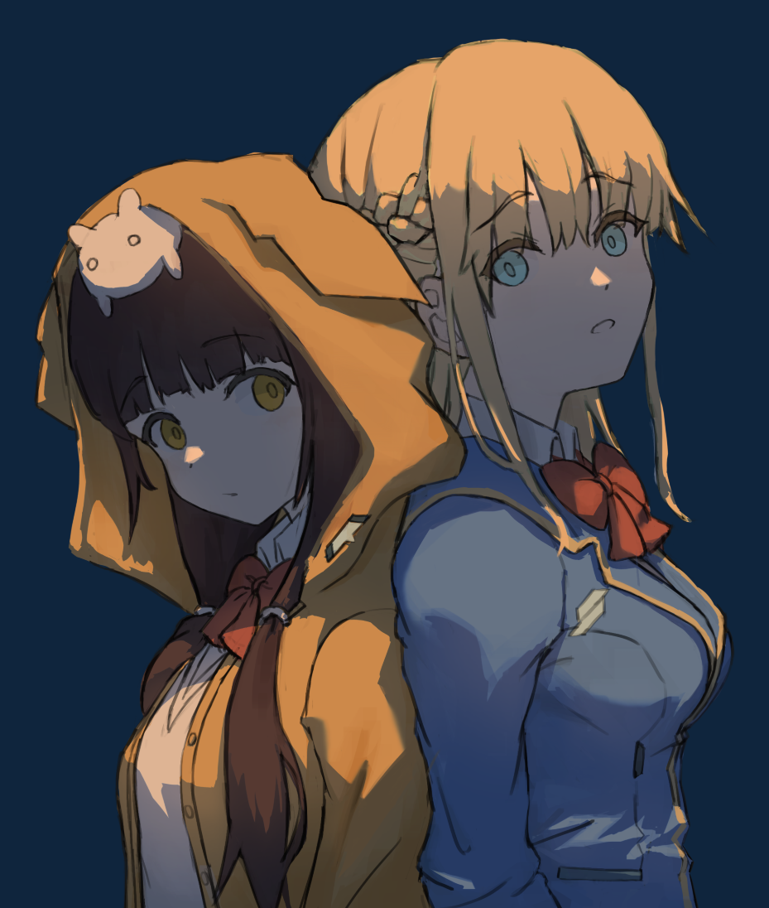
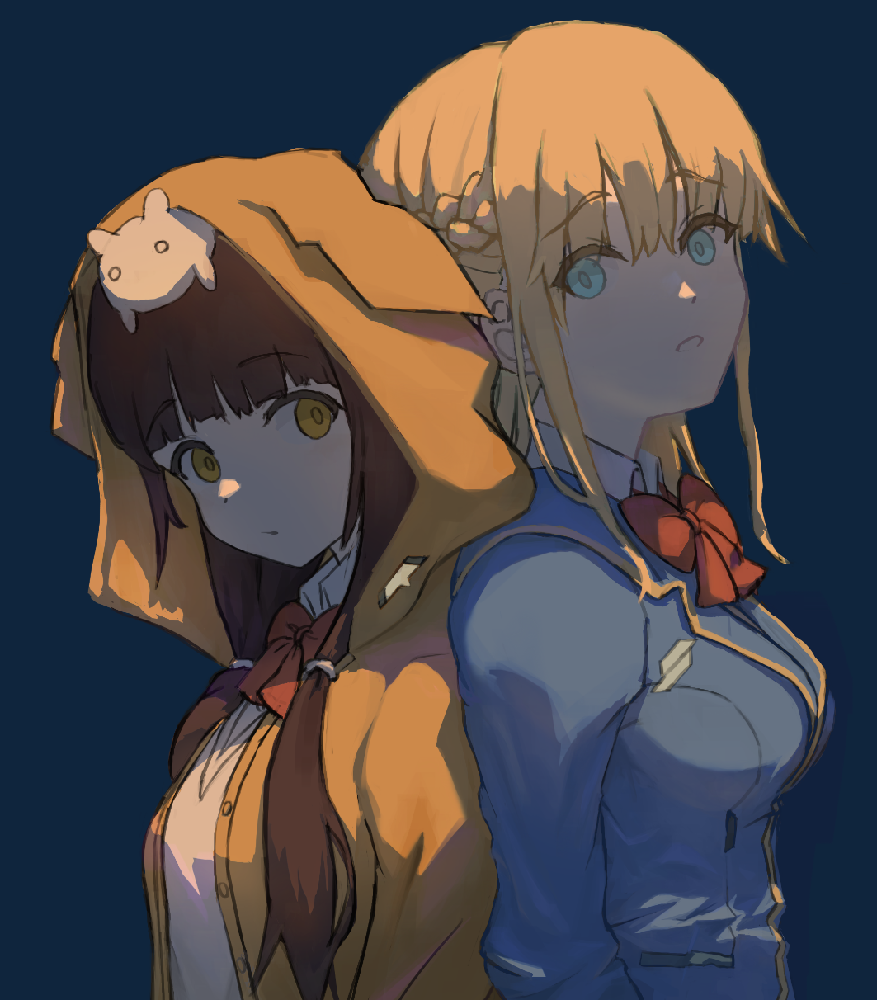

Krenz 色彩 L8 作业笔记
其实是创作啦。
即使是K大，在AI冲击的现在也会感觉到迷茫。或许确实各个阶段都会有各个阶段的迷茫吧……而我们会更甚……而解决方案还是那样，专注当前的斗争，专注过程，并尝试从中求得满足感。满足这两个字得反复强调——我不是享受苦难，不是去找寻乐趣，我要求得的，是满足感。我怀疑，这是一种高级趣味。我追求过程，我只问自己，今天我过的是否满足？无论我是失望，emo，快乐，迷茫，我都可以问自己同样一个问题，我对今天这段时间的使用，是否感到满足？
这里是满足而非充实……玩一天游戏也是充实，但问题在于玩完之后，我会感觉到虚无。满足感来自于我得到反馈。
不再问自己情绪问题了，问自己，我对自己的今天，是否满足？要注意，我即使是气到砸了桌子，倘若时候回过头来我开始反思，觉察自己，对自己做了心理疏导，这同样是一种满足，因为这天我会睡得很踏实。专注过程，专注当下。我又把话写的抽象了，但我确实没法很清晰地表述。
Intro
我先总结一下这整个作业的顺序（以及我要问一下助教这个后面能不能简化，因为我至少目前并不能一口气去把线稿整出来）：
- 收集三类参考图——造型/动态，交接线，环境光。环境光只需一张，交接线要至少人体一张，以及各种可能会让我烦恼的二分的细节按需找，造型动态同样按需找
- 造型/动态即要画的东西，如某种类型的衣服，某角色，其目的是为了能让我去参考其形体
- 交接线参考，如衣褶，人体，其目的就是为了做二分的时候作参考
- 环境光，同L7作业，定整个画面的色调，氛围……其实这与其说是环境光参考不如说是氛围参考了
- 绘制草图和试色纸片（可认为是一种配色的小稿）
- ……深入塑造
都是难关，哈？我先面对我当前的难关吧，参考和草图，某种程度上来说，草图是最难的部分。保持开心。
但最首先，我要先明确我究竟要画什么。这里如果限制环境光参考要使用照片或油画的话我不是不能去画高短调了……？
我本想找一个风格锚点的，但我发现这很难……因为风格锚点明显应当和环境光匹配，所以我应当转而求其次，求技法锚点，形状锚点，
他妈的，这个风格锚点的方法我还从来没实践过啊。下次实践的时候我要向自己强调——它是风格参考同时也是环境光参考，它是具体的！我或许会做turnaround或做元素的（整体的）替换，但我的氛围要和它相似（虽然这可能会把我推到风口浪尖上）。
回到现在。总之我要画司怜一个背靠背但目光似乎互相交错的镜头，顶光，暖光冷环境，长调子还是短调子我还没想好。我先用MagicPoser定一个二分和动作的参考，找相应的立绘和模型，然后，我直接开上，先画着再去找参考。
节点一
我要向自己强调——这作业我最应当关心的是节点一、二，我希望把二分和底图就给它处理地漂亮。
OK，开画。有参考的话就不是乱开枪了。
我画着画着突然意识到我这画的形体有点复杂——两个人的衣服会互相影响造成褶皱啊？这tm怎么画？
答案是，不考虑这个，让两个人并非真正地背靠背，只是看上去背靠背。这时候无法从空间上解释两个人的视线了，但为何要解释？绘画中的视线是二维的线条而非三维。
但实际要让它看上去合适还挺难的……总之折衷ing。
线稿草图搞定。然后上固有色。在上完固有色之后我再看要不要去重做一下线稿，细化一下结构。

我想做一个高短调的感觉，整体比较“轻”。但……至少这一幅做不了，等做完了再检讨吧。
我对目前还挺满意的，虽然我其实最初想做的不是这个（不过这作业第一次做，我也不敢太放肆，等做完了再检讨，以及问问老师后面的作业能不能放的更松）。

现在问题是下一步。作业的下一个节点要求我提交固有色和二分，我这个节点实际上已经把这事儿做了，虽然是草图。这里就有一个抉择了——我是直接开始后续的进度，边修整边塑造，还是回过头来修整当前的进度？我选择后者——我认为我的脑袋容量有限，如果选前者，我会overwhelmed，我画出来的东西会非常机械，而且累。第一次创作时我采取的是前者，而这让我意识到这一点。而回过头来修正当前的进度，这让我能专注到当前的问题——设计固有色（同时也是形状）。我已经开始摩拳擦掌了。
我要提醒自己，这两种选择，其实根本上是在探索时约束自己到何种程度的问题。倘若我采取前者，我实际上就是没有给自己任何约束，我选择最多，但我也最迷茫，在将来我更有经验的时候我会倾向前者，但现在这个会让我痛苦……采取后者的话，我给自己了约束——我在做固有色，我假设，我强迫自己思考我把角色安排在一个类似阴天的环境中——没有直射光，四面八方差不多亮。绘画本没有流程，但我给自己一个流程让我更好地能练习到特定部分（而且避免overwhelmed）。形式就是解放，约束就是自由，不是吗？但我仍然是在探索，这是不会变的。
（GPT说我这过程挺好，我就该主动地给自己流程，一次探索一部分，不要让自己overwhelmed，全上）
我开始质疑我是不是写太多文字了……但我就是想记（第一次创作的时候我也是试图强迫自己画完再记，但还是忍不住去记，因为总是有新东西冒出来）。再说这是作业，有给定的流程，不止是画笔，我得用思考和文字去理解这流程，这次先宽容自己吧。
OK，这个抉择做好了，下一个更加具体的抉择——我怎么去做线稿和固有色？我是另外勾线、上固有色还是直接在草稿上改？我选择后者，我不想丢掉这个草稿的感觉（再说这一幅我并非是要画赛璐璐，精细的线条并非是我追求的）。
明天继续努力吧。
节点二-固有色
我要向自己强调——对目前的我来说，可以说节点二是最重要的——我第一次做它，而且它某种程度上是画风无关的…感觉立绘，正面的打光，阴天，都和它相关…某种程度上吧。在这一步我应当参考L7，L5B，L1的底图，但如果做着做着有啥新想法我也得注意。
嘿，课件里也玩儿了固有色很多。做固有色的时候我也要考虑进去闭塞，以及让形状好看。shape always matters！
这幅画我原本没啥期待，结果老师和其他人一顿夸给我整不会了，有包袱了，怕失败了，不敢画了……明知道这是不健康的，但第一次被夸成这样我确实不习惯。
我得让理性上个场——老师和其他人，夸的究竟是什么？他们夸的不是我，是我这一次判断，这一天的结果，是一个一过性的东西。他们不用对这个判断去负责，不会再关心我后续的节点是否会违背他们这次的评价。只有我在关心。
说实话，我宁愿挨批评，挨批评相对于直接说“可爱”，“大佬”还更有建设性一些。我不值得表扬，因为我没法稳定复现这样的画。
我要放松的画，我要调适自己，我就强调——他们的表扬是不负责任的，前脚夸了后脚就忘了，我现在要做的，是继续按照我自己的步调来！他人的意见是参考而非准绳，至少在现在最重要的还是我自己怎么看。
向自己强调——整体推进，不要死扣一个点，先抓形状的正确（因为我大脑容量不够）……
好吧，实践证明，我还是先去做线稿吧……不然我脑子转不动了。但我要对自己强调——线稿只是为了设计形状，我要抓的不是galgame那样的流畅漂亮的线稿，线糙无所谓，主要是线所包裹的东西不糙。而且线条我在后面还会修改的，我甚至会将它和底下的图层合并。
我选择使用软笔刷勾线，这让线稿更简单去绘制就能够出效果（我很需要这个——出效果），把复杂度推到更后面。
我在emo，我不知道我这样走下去会发生什么，而且要命的是我发现我不知道该以哪个画师为参考……这就tm奇了怪了，我怎么无法找到风格锚点？我猜测，风格锚点应当更机械，要变更的东西更少。我如果要用风格锚点的方式去学习，我需要以想要的画师的一幅具体的画为基准。去变更画面的元素。而这创作我完全是自顾自的画下去的，画到中途再去找风格锚点，就全都不兼容了。我决心，在实际操作风格锚点前，我必须要先去临摹这个画师的一幅画。
但我的倾向其实还是能看出部分的，我喜欢画面整体硬朗，明确而非软糯模糊，我喜欢主体突出而非和背景融合。
现在，我换一个心智模型——我把项目当作git仓库去看待。我害怕我的这个抉择会搞错？就当我在新起一个branch，去尝试，如果出篓子了？我倒回来即可。殊途同归嘛！
这次，我画一个充满趣味的，草的，软的线稿，我希望这个线稿本身有魅力，不追求线条漂亮，但追求形状明确谁都能看懂。反正后面还能改。
等节点二做完后我要问问老师后面再做L8能不能把顺序放的更松一些，我习惯的作画方式是以最快的速度去做出整个画面的感觉然后再去细化，而不是草稿、线稿、小稿、上色这样的步骤。我想知道后面的L8我能不能遵循其他的顺序。
软线稿和固有色
软线稿的意义应该在于，它很容易出感觉，而且在将来我容易在关键的地方把它变得更硬。其实这根本就称不上是线稿不是吗……区别在于我甚至不会保留它
线稿是我勾勒形状的工具。而且它只是这个阶段勾勒形状的工具，固有色和二分和后续的塑造都会进一步处理形状，所以我不需要给自己太大压力！说到底这个阶段我根本就不应该把它叫做线稿。叫它精草吧，在这之后我直接开始二分和塑造。
大概是这种感觉吧……我不太满意其实，对头发的形体，对衣服的版型，我还非常模糊，但我本就不该想着我能把这活儿做到完美。我要做的是通关这个游戏，不是反复刷这个boss直到自己能无伤。
固有色的话，抄呗，我先抄完我再做操作。

我称这一步为上了固有色的精草。
固有色和形状修缮
我得到了上了固有色的精草，但下一步，我该咋办……？
我对自己说，我要修缮固有色和形状。但具体我要怎么做？
先再次叠甲——这些步骤都是必要的，而且是可回滚的，最怕的是停滞不前。
老实说，我的脑子里突然蹦出来一个想法——
- 我保存当前成果
- 然后直接上二分，调颜色（先不合并线稿）
- 推进二分
- 合并线稿
- 开始做固有色变化，修形状
就是说，我把固有色变化挪到做完二分的时候再操作，这是合理的——我上来就做固有色变化，没有二分所做出来的形体给我做参考信息的话，我做的不会很舒服。而且，我做的效果很可能会被二分盖掉很多……之类的。
but，no！我要锻炼自己！我就假设我在处理一个阴天的情况！去做固有色！我在挑战自己——没有明显光影的情况下，通过固有色去丰富画面的能力。
所以，我要这么做：
- 尝试做出固有色的变化
- 合并线稿，开始修形状
- 做二分
但我得向助教问一下我这思考方式是否有问题——把做固有色的变化，理解为事实上的固有色的变化加上闭塞。以及画立绘等情况是否就是做的这玩意儿。
但……实操发现，我发现我不知道怎么做，按阴天的感觉去做的话，那实际上不是一回事儿了……我的选择是，后面再练这个吧……
然后……我决定了——先做二分，再合并和修形状。结果我又回来了。这个阴天的情况我其实想做但这个和流程是相悖的，所以算了。这个阴天，我后面自己去练习。
关于 DLC
插曲一下。
我之前本想报它的DLC课程的——一些新作业，新的课程，然后连续三个月能无数次做最后的L8，即创作作业，但现在想想还是不报了……我已经学到了非常多东西（这让参加这个课程已经不算亏了），而我也意识到再做下去我会很痛苦：
L8的要求太蛋疼了，它限制草图-小稿-线稿-二分-塑造的顺序，我其实倾向更随意的流程，但这只是第一点。但更重要的原因是，它要求环境光，要求明暗交界线都要有参考，而且还不能要绘画做参考，必须要照片，这首先是和我的心智模型是不契合的，但更麻烦的是，这环境光要参考，还要直射光、环境光光源有明显的色彩倾向，这实际上就不允许我画那种自然的，没有明显色彩倾向的打光……但我为啥硬要给光源做色彩倾向……这应该是我塑造氛围的手段，而绝非必须啊？
而我最期待的实际上就是L8，是助教的批评指正，而如果做L8会很痛苦的话，那我不如自己来。
L8的设计是为了应用到课程中所讲授的全部内容，而我确实不想这么做。但我其实有我自己的局限性：我确实还缺乏色彩，以及创作的经验，我确实期待一个权威的批评。
而我终于要把自己解放了，我不想再把自己又放到同样的情景里！学够了，该抽身了，它给了我一个很好的基础，也让我成天 emo 和嫉妒（我有我自己的局限性，而我怀疑课程对此有很大催化）。我学到了很多东西，但我的心态也变得很不好了。在之前参加的透视课程上我倒没有什么想法，因为我有很好的基础，它的作业也相对机械，但到色彩课程上问题就凸显出来了。这也是我不继续报色彩DLC的原因之一。
放低要求，放低标准，放低身段，放弃思考，开心地完成这 L8，然后抽身吧！但更前面的剩下的作业我也得给它补上。
剩下的
然后二分……结果我对这二分并不满意，助教让我过了。这里关于脸部的打光我和助教有争议——我希望两人脸部都没有明显结构的体现，但助教说我的光源方向不可能让两个人都是正面……我是不赞同——光源又不是真的存在于那里，我是刻意为之的啊……
而如果按照这个光源，那小司的脸我就麻了——这是一个顶光——让我遭受灭顶之灾的顶光，顶光很难保留原来的感觉啊……总之我就这样了。等后面的步骤我再看我咋办吧。

我算是知道为啥大家都喜欢画背光了……我想知道我能不能画背光呢在这一张图？就像下面这张图，但我即使（不被助教允许）这么画，这张暗示的形体我也很喜欢，以后在二次元上我会以这个脸型为出发点。

啊，我要改成只有鼻子上有阴影，助教说可以，那挺好，我可以整了。
节点三-塑造
自己尝试一下
大的要来了。
emm，考虑到我当前的目标……线稿，给我合并吧！
我该给自己找目标。我要以怎样的顺序去细化？答案是——首先做最能造成画面感的，最能体现体积感的，最后才是真正的细化，眼睛，特效，勾线……
首先，从课程中我获得了哪些工具？分为三个部分——亮面，暗面，明暗交界线：
- 亮面：小调子，灰面，高光，质感，以及用闭塞在亮面里卡部分暗面出来
- 暗面：天光，地面反光，质感，缺光，死角
- 明暗交界线：藏色，质感
总之，我先做明暗交界线和亮面，先把……
no，去他妈的。我不定特别目标——我玩儿，我遇到什么玩儿什么。但唯独向自己强调——更多用明确形状而非微妙渐变去讲故事，宁方勿圆！
我……我到此为止了，记录下，然后我要revert了：

注意到修改线稿颜色后，画面突然柔和了非常多。
我的收获是什么？我的收获是，我意识到我现在不该像厚涂那样上来就涂涂涂，我先拒绝质感，以块面去思考！我先以最大的块面去思考（球），再以更细节的块面去思考（发片），最后才以质感去思考（发丝）！而发丝，我只需要稍微暗示一下就行了，不要给自己上压力。
以及，我要亮暗面同时推进！光亮面推进有点恶心了。
我得向自己强调……不要再tm乱涂了……始终带着目的，要求自己做下去的每一个形状，都必须是清晰的，显著的。
不行，我觉得这里有一个巨大的问题，我无法回避的，根本性的问题——这样一个纯粹的，没有变化的顶光，太机械了，太无聊了，我必须要破坏这个感觉。我要戏剧性，但我不要碎。稍微像那么一回事就行了，因为后面还要增加小调子呢。
玩，用玩的心态……
我注意到，其实假细节也是能够让画面成立的……怎样是“成立”？让读者产生幻觉，就这个意义上来说，我不该说什么真细节假细节，而是说有效细节无效细节。
当前进度……我注意到，这个二分仍旧是太过显著了……我使用了各种方法尝试让它更柔和，但很难。

这个问题我得问问助教，不能让钱白花。
我不喜欢问人，问人让我很有挫败感，这是一个不好的心态——我在紧抓着毫无意义的自尊不放。我太在乎，我认为问了人就是我不行。不不不，硬搓我总是能搓出来的，但问题是效率。要是全都能自己搞定，那还要老师干什么？
不过这里说说其他的东西……这幅打算当作作业交，所以我对它很上心。但我对这幅画本身的兴趣其实是不大的…我更倾向的是堆量，是快速地表达出自己的想法，去讲故事，去表达什么东西，但这幅画，细化，我就又要投入太多精力到画面的成立上了。而至少在目前，我的兴趣不在这上面。
但话是这么说，我还是想要把这幅画推进完成，即使我给自己做了心理建设，说我要玩着画，放轻松地画。或许是出于某种仪式感，或许是想让这课程值回票价……
好吧，被批评了——我选的参考不行，形状复杂，留下很多笔触，小调子，初学者很难参考。而且，助教强调——小调子难度最高，影响最小。但偏偏我就最喜欢小调子……
妈的，又是作为程序员的惯性。我喜欢自己理解，喜欢自己建立心智模型，于是自己出了问题也习惯自己研究…但我不得不说这也让我有一种优越感，让我容易钻进牛角尖。问题是，我不能对我自己的心智模型有优越感，我要接受它被现实拒绝的可能性，时时刻刻准备着去抛弃它。
但回过头来看助教的评价……这意思是说我上来就是错的，错干净了——我是形状驱动，小调子驱动去绘制的。这就整蛊了……我们的思路完全是反着的——我想着渐变，过渡最后做，先做形状，结果告诉我先做渐变、过渡，最后才是形状。fine……
唉，继续下去吧。这个星期会很痛苦，但我要对自己说，挫折是必然且必要的，我要改造自己的认识，离不开挫折，即使它不温和，可能是毁灭性的。我该怎么说呢？主席同样有这样的时候，他那么多年被边缘化的经历，对他后面的实践必然是有重大意义的。
嘿，翻eh突然发现这样一张图感觉就不突兀…

我犯了一个非常弱智的问题——我应当整个画面同时推进，而非专注在头发上；某处画面是否成立，应当是不止由这处画面决定的，而是由整个画面同时决定的……这仍旧是格式塔效应，在这时候，整个画面服务于这个局部。实际上强硬一点说——如果整个画面都是这样的突兀，那这整个画面可能就不突兀了。
所以，我要对自己说：整体推进，不要死扣，以及，不要放太大，跟随课件去做。
今天我学到 53231323，研究后我发现，因为听觉暂留效应，这个 5 起到了低音声部的作用，而这个低音声部（它可以不是 5），对这个模式是不可或缺的，它决定了后面的3231323的听感。我感觉和这里也有一定的呼应的关系——如果没有这个 5 这个重心，锚点，我后面再怎么修3231323也漂亮不起来。而在绘画中，这个5是大关系。
GPT强调让我很受用——优先关注关系，而非东西，我看着怪，很可能是关系的问题，东西是后面才加的。
跟着课件来吧
我认输了，我确实不行，而这是极为正常的事情，我只是仍旧抱有某种莫名其妙的优越感，不愿面对事实而已。而我必须由现实去打醒，即使这个过程是痛苦的。跟着课件去玩儿吧，它设计那样的顺序一定有它的道理……？即使我觉得怪怪的。我要吐槽，不吐不快。
虽然我写下这句话的时候我已经转过弯来了，我还在想我怎么花了这么久让思想转弯。
它节点三，以这些顺序去做了：
- 主要：
- 透光：分两部分——整体的基础的透光（即使物理上不透光的物体也做），以及实际透光，在真正透光的物体如肌肤，头发上做
- 闭塞：做闭塞，做出明显体积感
- 天光：朝上的面增加冷色受光
- 反光：朝下的面增加地面的反射光
- 过渡：软化边缘太硬（且不应当硬）的部分，这里包括明暗交界线
- 小调子：在保持大的明暗关系的前提下做小调子，以描绘物体的起伏，增加信息量
- 次要：
- 空气：前中后景的空间关系（越远亮度越高饱和度越低之类的）
- 光晕：强调直射光的感觉，暗示直射光的反光（就像在雾天的感觉）（这个对我这幅非常重要，我是觉得这要成为一个主要的东西……）
- 高光：在突起面，光滑材质，视觉焦点处等地方去加入高光
- 藏色：顾名思义
- 提神：藏色的某种——非常细小的缤纷的色彩，用于轮廓边缘或高光处
所以，为什么第一步是 tm 透光呢？
实际上我脑子里在试图问道——啥时候才会出感觉？信息量丰富且组织恰当的时候。这个组织恰当才是最难的部分……
总之我也做呗。这里我把线稿提前给合并了。
透光做完大概是这样，我不觉得这顺序只是做一次就完事儿的，所以我不求完美，直接开始下一步。

闭塞我目前没啥点子，反正啥时候都能做。然后天光和反光。我这副的环境光参考的话，天光是一个很明显的的蓝色，而似乎是基本没有地面的反光（或者说没有明确色相，所以地面反光就不做了，大概）。

在暗部玩儿了一堆，现在该到亮部了……
结果老师似乎主要关心的是疏密……我服了我。我先规定后面我要做的事情：
- 亮部的小调子
- 头发，衣服的高光
- 光晕
- 老师要求修改的地方
- 整体细节修缮（特别是眼睛，头发等）
目的是——提高亮部的信息量。
我要向自己重申——这次我的目的是为了符合助教的需要而非我自己的需要。
修完小调子和高光（？）后变成这样……大概。

助教的评价让我感觉她好像更重二维上的好看（抓构成，抓疏密，节奏）而非（其反映的三维的）形体上的正确…这就让我一直在抓形体正确这个行为有点打我自己的脸了……我是曾说过先好看再正确，说过绘画本质上是二维游戏啦，但我不是说正确就不重要了……这让我自己都开始怀疑是不是形体的重要性要比我想象中还要第一层……但我只是这么说说，我很不认同如此。
我不得不承认，脸部加入了地面反光后，突然就有了高级感，虽然我知道我处理的很拙劣。
然后，过啦……又一次我没有正确认识到工时，我感觉前面有很多工作，可我突然就做完了。就这样啦。
最后把它剪辑了一番发到b站上（kdenlive，还挺好玩儿的）
本博客所有文章除特别声明外，均采用 CC BY-NC-SA 4.0 协议 ，转载请注明出处！